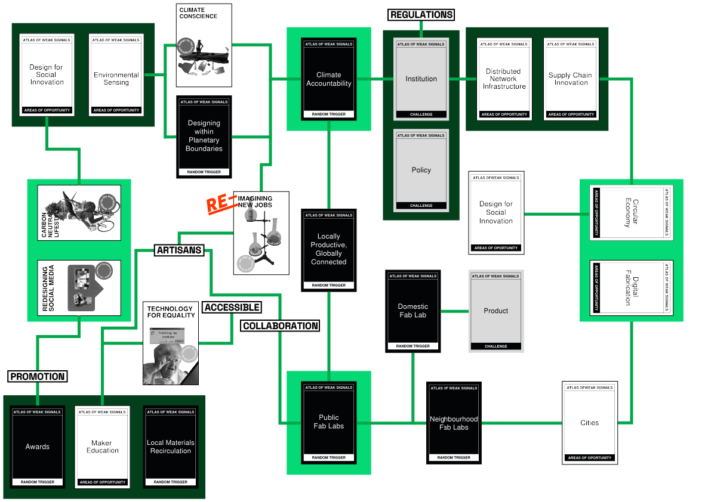

My design Space ðŸ§
Design Studio 01
09/10/2023 - 19/12/2023
This page will show the evolution of my personal design space through the first term of the master 🤓
First Design Space
09-10-2023
This is my first design space, developed after the first design studio session. Here I reflect my initial interest in joining the master. From digital fabrication to the reinvention of old jobs in this continuously evolving capitalist society

Second Design Space
08-11-2023
After a small-purpose crisis, once I finished my first intervention, I developed new interests. The shift in my design space can be seen in my new principal interests where biomaterials for digital fabrication data and sensors shine.